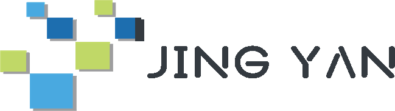

广州精研数据有限公司
香港强积金数据分析平台
首页
强积金资料库
MPF基金可视化对比
简
繁
EN
数据版本
—
…
广州精研数据有限公司
香港强积金数据平台
强积金资料库
基金可视化对比
近 1 年回报领先
查看完整榜单
›
近 5 年回报领先
查看完整榜单
›
推出至今累积回报
查看完整榜单
›
规模领先
查看完整榜单
›
积金表现指数
ⓘ
MPF 最新资讯
ⓘ
查看全部 →
市场整体回报走势
ⓘ
市场涨跌温度计
ⓘ
基金种类分布
受托人市场份额
风险级别分布
风险级别图例（1 级最低 → 7 级最高）
各类基金过去 12 个月年率化净回报
ⓘ
自建强积金数据平台
关键词搜索 · 种类 / 发行人 / 涨跌幅 / 回撤多重筛选
21 个维度榜单 · 类别冠军 · 勾选对比
移动端适配 · 繁体／简体／英文切换 · 数据每日自动同步
进入基金最新数据 →
进入基金对比 →